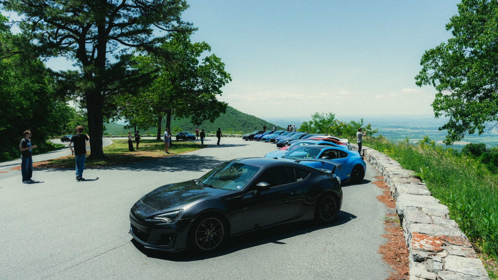

Our story
RVA 86 Club started in 2020 as a way for local 86-platform owners to find each other. Like a lot of things, it lost momentum after COVID and stayed quiet for a while. In 2025, Farhan Nahin, @roninbrz, took over the channels and brought the club back with a brand new face. Biweekly meets around the greater Richmond area, organized cruises, and a community that gives BRZ, FR-S, 86, and GR86 owners a chill place to connect without the ego of the surrounding car community.

Not just a car club, but a social community.
The cars are what bring everyone into the parking lot, but the people are what make the club worth coming back to. RVA 86 Club is 86-focused without being closed off: a place for meets, cruises, photos, build talk, local recommendations, and laid-back nights with people who care about the same platform.
86-focused
The BRZ, FR-S, Toyota 86, and GR86 are the center of the club, but respectful enthusiasts from outside the platform are welcome too!
Respectful
No takeovers here- we're strictly against that kind of thing. Our meets don't tolerate revving, burnouts, or obnoxious behavior. We want the Richmond car scene to feel welcoming and safe for anyone and everyone!
Cultured
RVA 86 strives to create a community that works with local businesses and groups to foster a broader impact beyond bringing a few car enthusiasts together, but builds on the culture of our city.
Quick answers
Do I need a BRZ/86/FRS to join?
No. The club is centered around the 86 platform, but we are not trying to make it feel closed off or weirdly exclusive. Friends, photographers, and other enthusiasts are welcome. If you are bringing a non-86 car to a meet, we just ask that you park in the “others” section so the 86 lineup stays organized.
Do I have to sign up or register anywhere?
No sign-up is needed for regular meets. Just come out, park respectfully, introduce yourself if you want to, and get involved at whatever pace feels right. Some people show up for every cruise, some stop by once in a while, and both are completely fine.
Where can I find events posted?
We post event flyers and reminders across our socials, and the full-year schedule lives on our Google Calendar when dates are set. As long as you're following the Instagram, in our Discord, or in the Facebook group, you won't miss anything, as events are posted in every channel.
Can businesses collaborate?
Yes, and we are always open to the right collaborations. We like working with local shops, vendors, photographers, restaurants, and businesses that want to host meets, support the community, or do something useful for owners in the area. Reach out through the contact page and tell us what you have in mind.